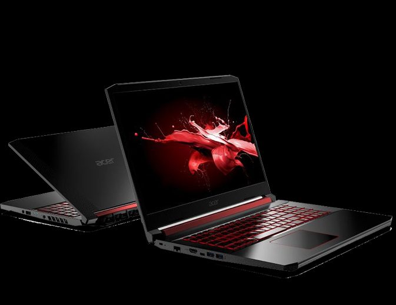
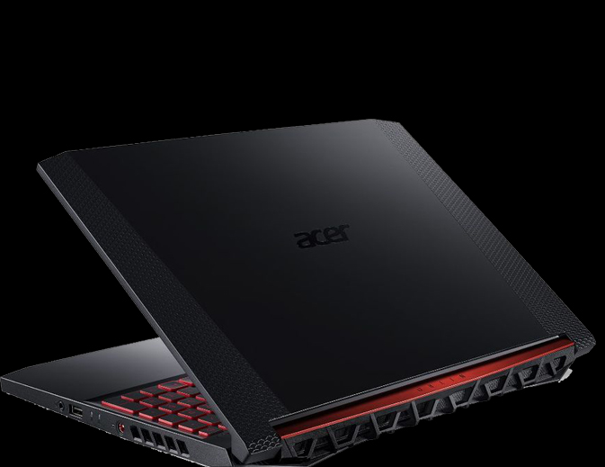
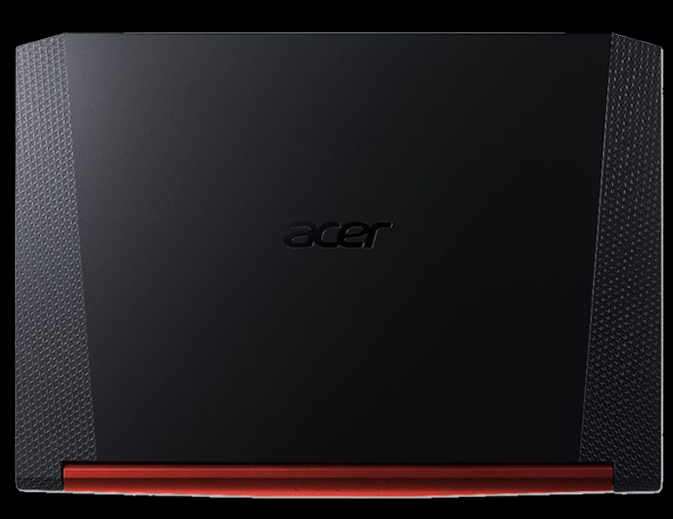

O notebook gamer
Acer Nitro 5 é a nova geração, com uma configuração que não treme para os jogos mais pesados. Com
processador Ryzen 7 e memória RAM de 8 GB, expansível a 32 GB, você embarcará nos
mais intensos desafios com potência máxima.
Modelo que esta sendo de usado de exemplo é o AN515-43-R4C3.
CPU E CHIPSET: AMD Ryzen 7 – 3750H
Quad core
Frequência: De 2.30 GHz à 4.00 GHz
Para maiores informações consultar o site do fabricante
MEMÓRIA RAM: 8 GB (1x8GB Módulo) RAM
DDR4
Até 2400MHz
Expansível a 32 GB (2 slots soDIMM)
Design: Ultra-slim
TELA:15.6"
Painel: IPS (In-Plane Switching)
Anti reflexivo
Resolução: FHD (1920 x 1080)
Frame rate: 60 Hz
Tempo de resposta: 25~27ms
Color Gamut (NTSC): 45%
Proporção: 16:9
Mercury Free
Tecnologia Acer ComfyView™ que reduz o desconforto visual
PLACA DE VÍDEO: NVIDIA® GeForce GTX™ 1650 com memória dedicada VRAM de 4GB GDDR5
Radeon™ RX Vega 10 Graphics com memória compartilhada com a memória RAM
Para maiores informações consultar o site do fabricante
ÁUDIO: Aprimoramento de Otimização de som Dolby Audio Premium
Dois microfones internos
Compatível com a Cortana com Voz
ARMAZENAMENTO: 1TB HDD SATA 3 2.5 MM 5400 RPM
128GB SSD PCIe NVMe 3x2 M.2 2280
WEBCAM: Resolução 1280 x 720
Gravação de video e áudio em 720p HD
SHDR (Super High dynamic range imaging)
WIRELESS E REDE: Wireless (Wi-Fi):
Compatível com 802.11a/b/g/n/acR2+ax
Suporte a redes com frequências de 2,4GHz até 5GHz
Ântena: 2x2 com tecnologia MU-MIMO
Bluetooth: Versão 5.0
LAN/Rede com fio:
Gigabit Ethernet 10/100/1000 (RJ45) com suporte a Wake on LAN e ‘RealWoW!’
Realtek RTL8118ASA
DIMENSÕES E PESO:Dimensão: 390 (L) x 266 (P) x 26.75 (A) mm
Peso: 2.7 kg
BATERIA E ALIMENTAÇÃO: Fonte de Alimentação: Adaptador 135W AC com cabo de 3 pinos padrão INMETRO bivolt
Bateria: com 4 células 55Wh 3220 mAh 15.2 V
Autonomia da bateria de até 7 horas (depende das condições de uso)
TECLADO E CONTROLES: Teclado: Padrão ABNT 2 com teclado numérico independente, retro iluminado em vermelho com teclas WASD em destaque
Teclas Multimídia: Play/pause, parar, voltar, avançar, aumentar volume e diminuir volume
Touchpad: Multi gestos suportando scroll com 2 dedos, 2 botões e multitarefas com certificação de precisão Microsoft
CONTEÚDO DA EMBALAGEM: Notebook Acer Aspire Nitro 5
Fonte carregadora do notebook
Manual em português
Termo de garantia
COR: Preto e vermelho. Acabamento com padrão gravado à laser